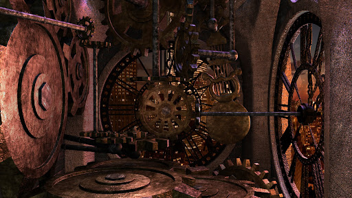

Nachdem du durch das seltsam schimmernde Tor getreten bist, findest du dich in einer Art Parallelwelt. Alles um dich herum sieht genau so aus wie der Ort an dem du erwacht bist. Der einzige Unterschied ist, dass deine Hand, sobald du etwas brühren möchtest hindurch gleitet als wäre es Luft.

Auf einmal fängt alles um dich herum an sich zu drehen und du fällst hin und alles um dich herum wird schwarz.
Als du die Augen wieder öffnest findest du dich am ersten Ort deines Erwachens wieder.
Und siehst erneut die zwei Optionen von vorhin: